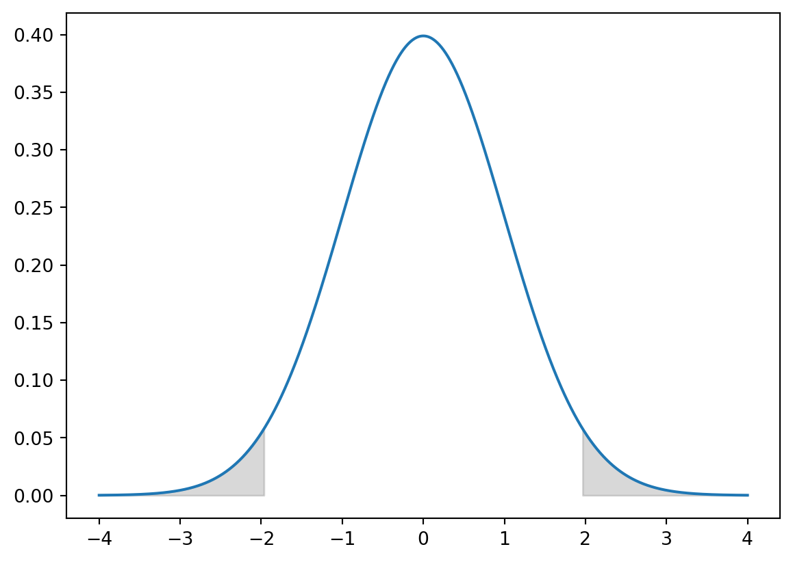
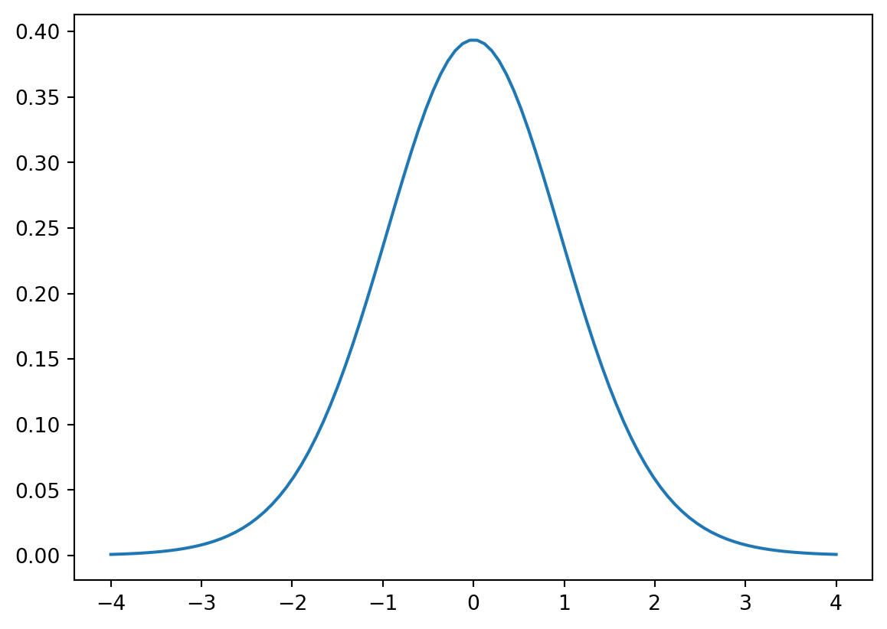

Point estimators cannot be expected to provide exact values of population parameters. Intervals provide information about how close the point estimate is to the value of the parameter.
Confidence intervals are interval estimates where we have a certain level of confidence in the interval.
What does it mean when we are 95% confidence that the population mean is between 20 and 30?
If we were to take many samples with the same sample size that each produced different confidence intervals, then 95% of them contain the true parameter
This DOES NOT mean we have a 95% chance the population parameter falls inside our single confidence interval
The population parameter is not guaranteed to be contained within the interval
1 Margin of Error
Confidence intervals are computed by adding a margin of error to our point estimate:
\[
\text{Point Est.} \pm \text{Margin of Err.}
\]
Margin of error is the largest possible sampling error at the specified level of confidence:
Standard error is the estimated value of the standard deviation of the sampling error. Keep in mind that standard errors are calculated on statistics while standard deviation is calculated on raw data.
2 Interval Estimation of \(\hat{p}\)
Sampling distribution of \(\hat{p}\) plays a key role in computing the margin of error for the proportion interval estimate.
Sampling dist. of \(\hat{p}\) is approximately Normal whenever \(np \geq 5\) and \(n(1 - p) \geq 5\).
Code
from scipy.stats import timport matplotlib.pyplot as pltfrom scipy.stats import normimport numpy as npmean =0sd =1alpha =0.05x = np.linspace(-4, 4, 1000)crit_value = norm.ppf(1- alpha /2, loc=mean, scale=sd)pdf = norm.pdf(x, loc=mean, scale=sd)plt.fill_between(x, pdf, where=( x > crit_value), color='gray', alpha=0.3)plt.fill_between(x, pdf, where=( x <-1* crit_value), color='gray', alpha=0.3)plt.plot(x, pdf)

Interval Estimation Critical Regions on Standard Normal, \(\alpha = 0.05\)
We can obtain our critical z-value through a two-tailed test computation which helps us calculate the confidence interval for \(\hat{p}\):
We can calculate the z-value needed through the Standard Normal table with the \(\alpha/2\) level of probability or in Python using \(1 - \frac{\alpha}{2}\) and norm.ppf from scipy
If we look at the formula, then an increase in he sample size would result in a narrower confidence interval. Meanwhile, if we increase our confidence interval the confidence interval becomes wider.
3 Interval Estimation of \(\bar{x}\)
In interval estimations of \(\bar{x}\) we don’t know the standard deviation so we need to estimate with the sample standard deviation, \(s\).
We are now estimating both \(\mu\) and \(\sigma\) so we have extra error. Normal distribution is no longer a good approximation so we need to use another distribution.
3.1 Student t Distribution
The t distribution is also symmetric, but has thicker tails than the Normal distribution.
It has \(n - 1\) degrees of freedom where the degrees of freedom are the number of independent pieces of information that go into the computation of \(s\).
For larger samples, the t distribution is approximately the standard Normal distribution.
Code
x = np.linspace(-4, 4, 100)pdf = t.pdf(x, df=19)plt.plot(x, pdf)

Plot of a t distribution with d.f. 19
The confidence interval for \(\bar{x}\) is calculated as:
For large samples (\(n \geq 50\)) we can calculate the confidence interval for the mean from any population.
For small samples (\(n < 50\)) we need to assume the population follows a Normal distribution.
4 Sample Size Calculation
To calculate the sample size needed for a desired margin of error, we can calculate \(n\) from the confidence interval formulas.
\[
\begin{align*}
E &= z_{\alpha/2} \sqrt{\frac{\hat{p}(1 - \hat{p})}{n}} \\
\ \\
n &= \frac{(z_{\alpha/2}^2)\hat{p}(1 - \hat{p})}{E^2}
\end{align*}
\]
Since \(\hat{p}\) depends on sample size, we typically use an estimate \(p^* = 0.5\) as that will provide us the largest sample size for any true value of \(\hat{p}\).
What about for sample mean \(\bar{x}\)?
\[
n = \frac{(z_{\alpha/2}^2)s^{*2}}{E^2}
\]
We don’t know \(s^2\) or the t-value ahead of sampling so we substitute with z-score and \(s^{*2}\) using a pilot sample or previous information to get the value.